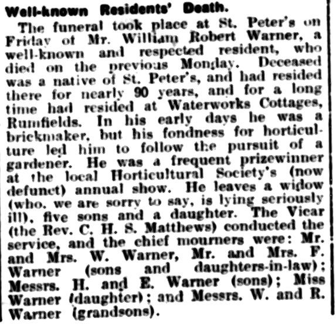
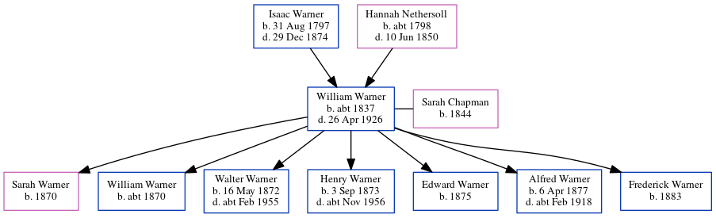

William Robert Warner c1837 - 1926
[ Home ] | [ Calendar ] | [ Surnames Index ] | [ Census Index ] | [ Family History ]A builder's laborer and the child of Isaac Warner (a laborer) and Hannah Nethersoll, William Warner, the three times great-uncle of Nigel Horne, was born in St Peters, Thanet, Kent, England c. 18371,2, was baptized there on Apr 16, 1837 and also married Sarah Chapman (with whom he had 7 children: Sarah Jane, William Jesse, Walter Chapman, Henry John, Edward, Alfred Stephen and Frederick) there on Feb 6, 18694.
During his life, he was living at Callis Court, St Peters, Thanet, Kent, England on Jun 6, 18411; at Burtons Cottages, St Peters in Thanet on Apr 3, 18816; at Magdala Road, St Peters in Thanet on Apr 5, 18917; at Rumfields, St Peters in Thanet on Mar 31, 19012; and at Holly Lodge, Rumfields, St Peters in Thanet on Apr 2, 19115. Williamappeared in The East Kent Times and District Advertiser on 5 May 1926 on page 7 (https://www.findmypast.com/image-viewer?issue=BL/0003349/19260505&page=0007&article=091&stringtohighlight=william%20robert%20warner)
He died on Apr 26, 1926 in Thanet3 and was buried in St Peters on Apr 30, 1926.
Parents
- Isaac was born on Aug 31, 1797
- Hannah was born c. 1798
Children
- Sarah Jane was born in 1870
- William Jesse was born c. 1870
- Walter Chapman was born on May 16, 1872
- Henry John was born on Sep 3, 1873
- Edward was born in 1875
- Alfred Stephen was born on Apr 6, 1877
- Frederick was born in 1883
Citations
- 1841 England, Wales & Scotland Census - Findmypast (was age 4 and the son of the head of the household)
- 1901 England, Wales & Scotland Census - Findmypast (was age 64 and the head of the household)
- England & Wales deaths 1837-2007 - Findmypast
- Kent, Canterbury Archdeaconry marriages 1538-1928 - Findmypast
- 1911 Census for England & Wales - Findmypast (was age 74 and the head of the household)
- 1881 England, Wales & Scotland Census - Findmypast (was age 44 and the head of the household)
- 1891 England, Wales & Scotland Census - Findmypast (was age 54 and the head of the household)
Media
The_East_Kent_Times_and_Distri_05_May_1926_0007_Cl

England & Wales deaths 1837-2007 - BMD/D/1926/2/AZ/000976/067
1901 England, Wales & Scotland Census - GBC/1901/0007468151
Kent, Canterbury Archdeaconry marriages 1538-1928 - GBPRS/CANT/M/97018712/1
England Marriages 1538-1973 - R_848292441
England & Wales marriages 1837-2008 - BMD/M/1869/1/AZ/000235/239
1911 Census for England & Wales - GBC/1911/RG14/04509/0035/1
1881 England, Wales & Scotland Census - GBC/1881/0004870499
1891 England, Wales & Scotland Census - GBC/1891/0005914437
1841 England, Wales & Scotland Census - GBC/1841/0013965180
Family Tree
Generated by ged2site. Last updated on Jun 11, 2024